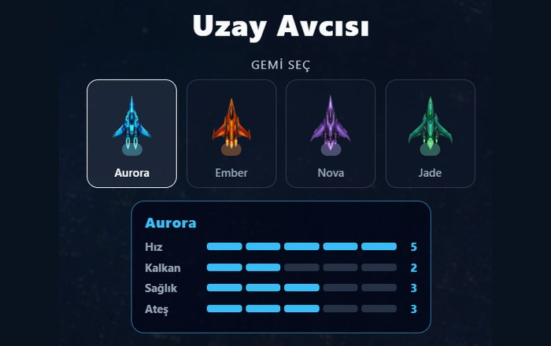
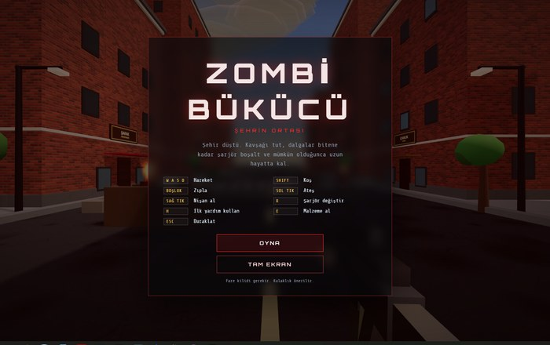
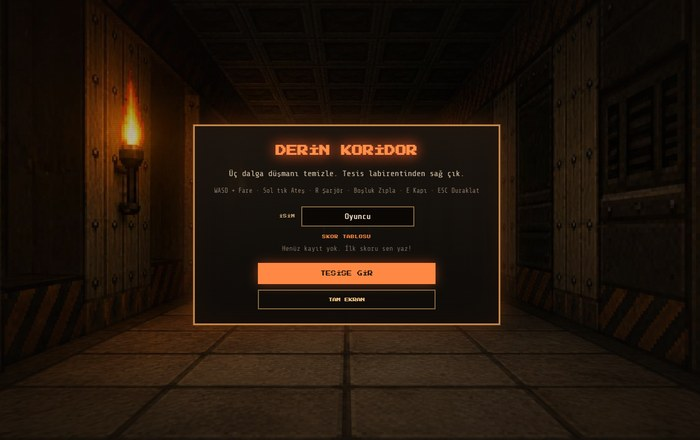

OyunUzay Avcısı
Kendi yaptığım, uzay temalı bir atış/aksiyon oyunu. Expo ve React Native ile geliştirdim; react-native-web sayesinde tarayıcıda da oynanabiliyor.
Expo
React Native
react-native-web
Oyna →

OyunZombi Bükücü
Kendi yaptığım, tesisi zombilerden geri almaya çalıştığın bir hayatta kalma nişancı oyunu. Üç dalga canavarla mücadele ediyor, kapılardan geçip sandıklardan silah topluyorsun.
JavaScript
Canvas API
E-Ticaret Vitrini
WordPress tabanlı, responsive ve hızlı yüklenen bir ürün vitrini uygulaması.
WordPress
Web Siteleri
Bireysel ve küçük işletme müşterileri için tasarladığım, duyarlı (responsive) kurumsal ve tanıtım web siteleri.
HTML/CSS
JavaScript

OyunDerin Koridor
Kendi yaptığım, bir tesis labirentinde hayatta kalmaya çalıştığın bir nişancı oyunu. Üç dalga düşmanı temizleyip labirentten sağ çıkmaya çalışıyorsun.
HTML
CSS
JavaScript